One dot per row and column, its area growing with one measure (for
example the percentage of positive cells, as a figure scatter area
area[1] + area[2] * size in points squared) and its colour showing a
second (for example a z-scored signal on a diverging scale). Rows without
any value are dropped. Thin grid lines run through the dots and a light
frame surrounds the matrix; row annotation boxes, a colour bar and a size
key can be added outside it.
Usage
PlotDotMatrix(
data,
row = "row",
column = "column",
size = "size",
signal = "signal",
rows = NULL,
columns = NULL,
row_labels = NULL,
column_labels = NULL,
area = c(2, 0.55),
scale = "rdbu_r",
limits = c(-3, 3),
edge_colour = "#777777",
edge_width = 0.25,
grid_colour = "#F0F0F0",
grid_width = 0.5,
frame_colour = "#BBBBBB",
frame_width = 0.4,
pad = 0.1,
row_colours = NULL,
row_box = c(-1.05, 0.35, 0.76),
column_angle = 55,
column_size = 5.1,
column_pad = 3.5,
row_size = 5.3,
row_pad = 9,
colourbar = NULL,
size_key = NULL,
texts = NULL,
values = NULL,
style = ManuscriptStyle()
)Arguments
- data
Long data: one row per matrix cell.
- row, column
Columns with the row and column keys.
- size, signal
Columns with the size and colour measures.
- rows, columns
Row order (top to bottom) and column order (left to right): character vectors or data frames (ordered by a
rankcolumn if present); default first appearance.- row_labels, column_labels
Display labels: named mapping or vector.
- area
Scatter area
c(intercept, slope)in squared points.- scale
Colour scale name or vector of anchor colours.
- limits
Colour limits; values are clipped to them.
- edge_colour, edge_width
Dot outline colour and width (points).
- grid_colour, grid_width
Grid lines.
- frame_colour, frame_width
Frame around the matrix.
- pad
Extra space beyond the outer dots, in row and column units.
- row_colours
Named colours of row annotation boxes.
- row_box
Box geometry
c(left, width, height)in column units, left measured from the centre of the first column.- column_angle, column_size, column_pad
Column label rotation (degrees), size and distance from the matrix (points).
- row_size, row_pad
Row label size (points) and distance from the matrix (points).
- colourbar
Optional list:
box(c(left, bottom, width, height)in panel fractions),title,breaks,labels,tick_size,title_size.- size_key
Optional list:
values(sizes shown),at(panel fractions of the first key dot),step(panel fraction between dots),fill,label_dx(panel fraction from dot to label),title,title_at,size(text points),suffix(default"%").- texts
Optional texts at panel fractions (list of
label,xy,size,colour,bold,hjust,vjust,angle); labels may useFormatTemplate()placeholders filled fromvalues.- values
Optional data frame for text templates.
- style
A
ManuscriptStyle()object.
Examples
d <- expand.grid(row = c("a", "b", "c"), column = c("m1", "m2"), stringsAsFactors = FALSE)
d$size <- c(90, 10, 40, 5, 70, 20)
d$signal <- c(2, -1, 0.5, -2, 1.5, 0)
PlotDotMatrix(d)
